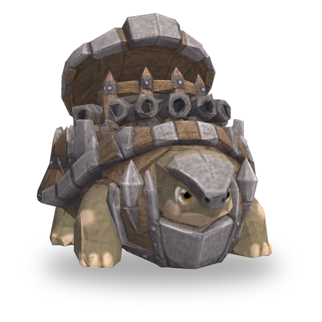

액티브
회전 포격
바라보는 방향부터 반시계 방향으로 한 방향씩 돌며 대포를 6번 쏩니다. 각 포탄은 그 방향 2칸 이내의 첫 번째 적에게 공격력의 500%만큼 물리 피해를 줍니다. 포탄 사이 간격은 0.5초이며 공격 속도에 따라 바뀝니다. 쏘는 동안에는 움직이지 않으며, 기절하거나 결빙되면 남은 포탄은 쏘지 않습니다. 포격이 끝날 때까지 마나가 차지 않습니다.
 3D
3D
| Lv. | 체력 | 공격력 | 마법력 |
|---|---|---|---|
| 1 | 345 | 20 | 20 |
| 2 | 397 | 23 | 23 |
| 3 | 456 | 26 | 26 |
| 4 | 525 | 30 | 30 |
| 5 | 603 | 35 | 35 |
| 6 | 694 | 40 | 40 |
| 7 | 798 | 46 | 46 |
| 8 | 918 | 53 | 53 |
| 9 | 1055 | 61 | 61 |
| 10 | 1214 | 70 | 70 |
| 11 | 1396 | 81 | 81 |
레벨이 오를 때마다 체력·공격력·마법력이 15%씩 커집니다(최대 Lv.11).
No.029
둘러싼 적이 많을수록 단단해지고, 제자리에서 돌며 사방으로 대포를 쏩니다.
액티브
바라보는 방향부터 반시계 방향으로 한 방향씩 돌며 대포를 6번 쏩니다. 각 포탄은 그 방향 2칸 이내의 첫 번째 적에게 공격력의 500%만큼 물리 피해를 줍니다. 포탄 사이 간격은 0.5초이며 공격 속도에 따라 바뀝니다. 쏘는 동안에는 움직이지 않으며, 기절하거나 결빙되면 남은 포탄은 쏘지 않습니다. 포격이 끝날 때까지 마나가 차지 않습니다.
패시브
자신 주변 1칸 이내의 적 하나마다 방어력과 마법 저항이 35씩 증가합니다.